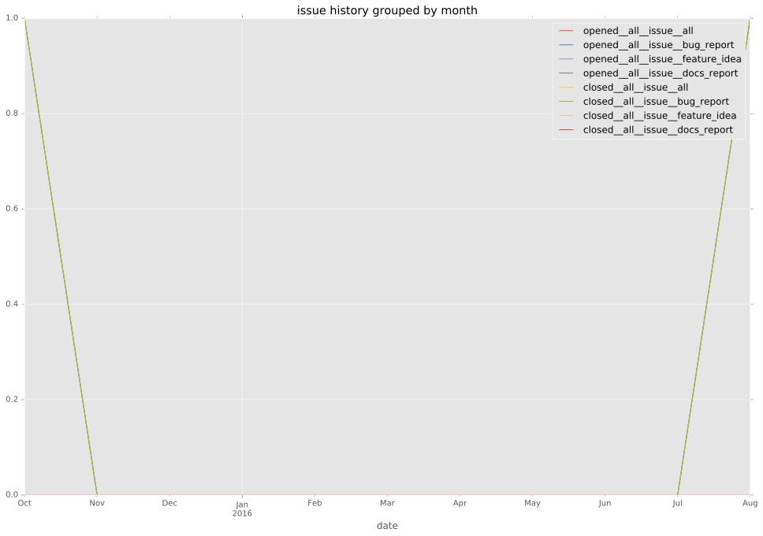
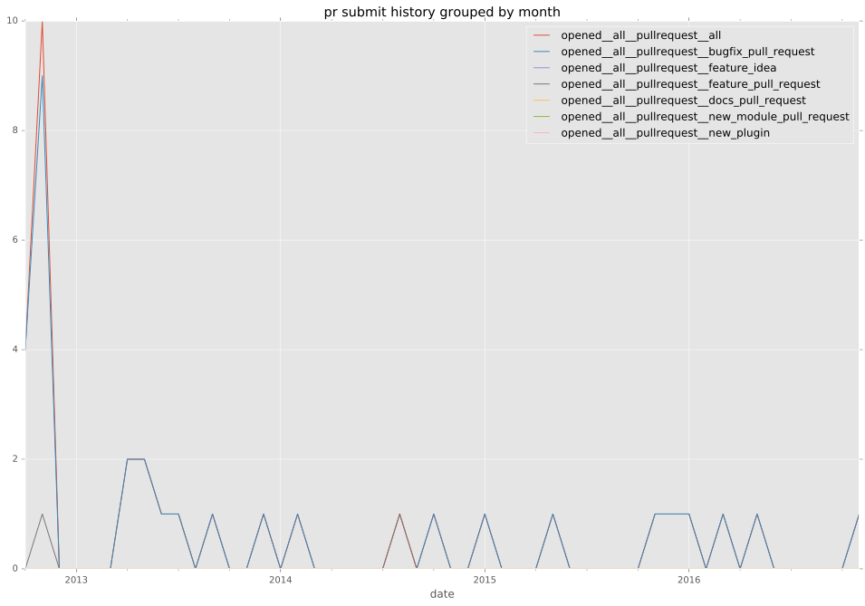
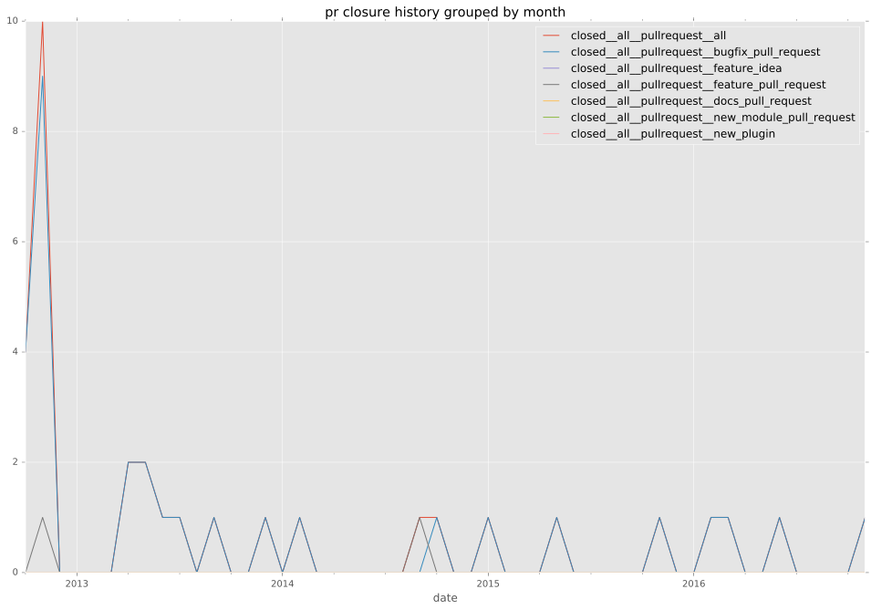

authors
- dagwieers
maintainers
- dagwieers
contributors
- jkleckner : 1 commits
- dagwieers : 6 commits
- jpmens : 4 commits
total issue counts
feature pull request: 2
bugfix pull request: 23
pullrequest: 25
issue: 1
bug report: 1
issue history

pullrequest history


days open by issue type
bugfix pull request
count: 30
std: 3.76676329853
min: 0
max: 15
median: 0.0
mean: 2.13333333333
all
count: 33
std: 10.2367800927
min: 0
max: 57
median: 0.0
mean: 3.66666666667
pullrequest
count: 0
std: nan
min: nan
max: nan
median: nan
mean: nan
feature pull request
count: 2
std: 40.3050865276
min: 0
max: 57
median: 28.5
mean: 28.5
issue
count: 0
std: nan
min: nan
max: nan
median: nan
mean: nan
bug report
count: 1
std: nan
min: 0
max: 0
median: 0.0
mean: 0.0
closures grouped by total days open